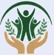
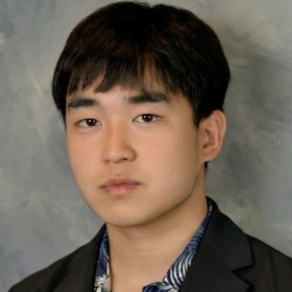
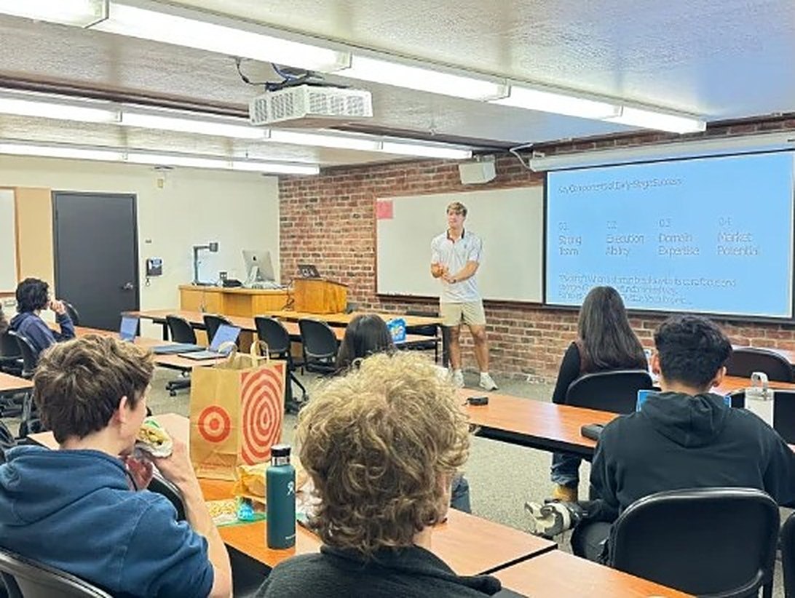
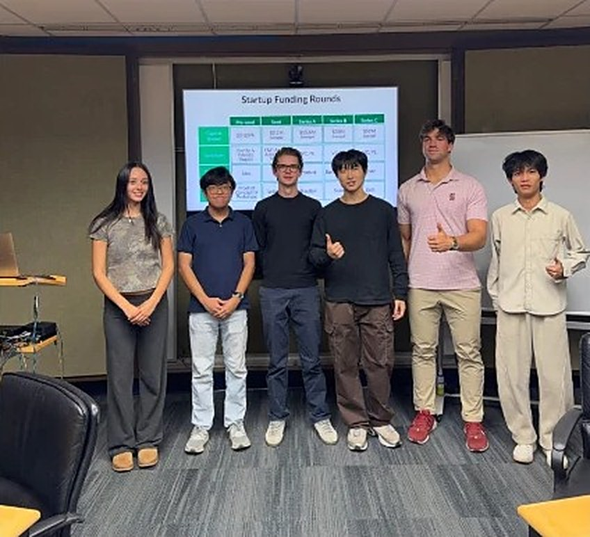

Joshua Koo · Callen Bronson · John Salvi · Wiley Kendall / SEC Midterm · Fall 2026
Creators, not just consumers of AI ✺ Next Generation Founders ✺ Creators, not just consumers of AI ✺ Next Generation Founders ✺ Creators, not just consumers of AI ✺ Next Generation Founders ✺ Creators, not just consumers of AI ✺ Next Generation Founders ✺
The venture we’re working on
NextGenerationFounders.

Student-run nonprofit · Bay Area
Co-founded ~1 year ago by John Salvi + Rishi Sadanandan
1
Ignite
Free, hands-on AI + startup workshops
2
Access
Tool credits so students keep building
3
Community
Peers, mentors + follow-up
Free for students + schools · no experience needed
StanfordTeam NGF

Joshua Koo
Junior · CS + Math
Chief of Staff, APAC
@ Cognition
StanfordTeam NGF
Callen Bronson
Junior · Mathematics
Stanford Athletics digital media
Outreach + storytelling
StanfordTeam NGF
John Salvi
Senior · CS, AI track
Co-founder, NGF
Lockheed Martin
Leads the workshops
StanfordTeam NGF
Wiley Kendall
Junior · Stanford
Math + Computational Science
Why us?
Builders, close in age to the students we serve.
Meet Maya / a composite student
An idea.
A laptop.
A $20/mo paywall.
Zero founders nearby.
So we brought both.
$20/MO
NightShiftJoin
Study groups for people who work late.
Find my group
The need
88%
17%
of students worldwide already use AI in their studies.
of US and Canadian students think their instructors can guide them on AI.
ChatGPTCursorLovableall behind a paywall.
Source: Digital Education Council, AI in Higher Education Global Survey 2026 (45,398 responses across 35 countries). One dot = 1%.
The brief:two connections.
Club leaders
New campuses
AI companies
OpenAI · Cursor · Lovable
Our class project: strengthen both sides

Creators,not justconsumers.
AI and entrepreneurship for every student, any background.
Mission, purpose, vision.Sharpened.
Mission
NGF today“Next Generation Founders empowers under-resourced youth by teaching creativity, innovation, and modern AI tools to help them build confidence, agency, and opportunity.”
Our updateTo give under-resourced students the skills, tools, and community to build with AI and turn their ideas into impact.
Purpose
NGF today“NGF uses hands-on learning, creative problem solving, and supportive community spaces to help students develop hope, purpose, and resilience.”
Our updateWe exist so that a student’s background never decides whether they get to build.
Vision
NGF today“A world where every young person has access to the tools, support, and belief they need to see their own potential and create positive change in their communities.”
Our updateA future where every campus is an on‑ramp, and every young person can build with AI to change their community.
NGF so far
0
students reached
0
colleges reached
0
in AI credits given out
300+ is NGF team-reported for Oct 2026 (the public site shows 200+). Colleges and credits: nextgenerationfounders.org
Tech partner: Lovable
We widenedevery door.
Community colleges→Any campusMenlo College
Startup clubs→Any clubInt’l Business Club
Introductions→Live buildsLovable demo
One-off events→Every yearFoothill, year two
How we foundour stops.
Menlo
Tue workshop
Looked past startup clubsCampus research
Int’l Business ClubHost: Crystal Romero
First NGF workshop of 2026New campus
Foothill
Wed, Oct 21
NGF’s year-one relationshipExisting network
Startup ClubLead: Weng Han Fong
Invited back for year twoRenewed
AI side
Partners
Mapped the tools students usePartner research
LovableCurrent tech partner
Replit · Canva · StreetCodeProspects in outreach
0campuses researched
0leaders contacted
0conversations
Idea in.Website out.
00:00
Live with Lovable · click to replay
lovable.dev
NightShift
GroupsScheduleJoin
Study groups for people who work late.
Find my group
Accounting 1ATonight, 11pm
Calc IISunday, 9am
Intro to PythonThursdays
Stop 01 · Tuesday
MenloCollege
International Business Club
Host Crystal Romero

New
Stop 02 · Wed, Oct 21
FoothillCollege
Startup Club · Led by Weng Han Fong
PivotsCompetitionDebt vs equityBay Area trends
Yr 2
The real question:what happens next?
NGF
Nice work tonight! Here are your free credits.
NGF
How’s NightShift going? Want to demo it next week?